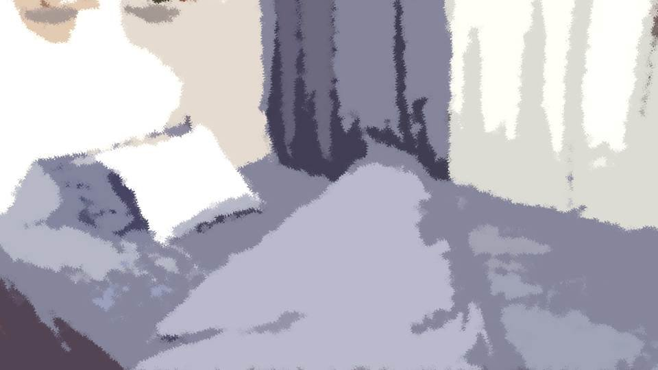

Script 00002355
 video: 光2.wmv
video: 光2.wmv――誰か……助けてくれ……。
――私を助けてくれ……。
――私を助けてくれ……。
video: 光2.wmv「あれ？ そんなところで何してるの？」
――その声…… お前、生きてるのか！？ 生きてるんだな！？
――その声…… お前、生きてるのか！？ 生きてるんだな！？
video: 光2.wmv「うん、そりゃ生きてるけど……。
そんなところで何してるの？ ほら、そろそろ起きないと」
――ま、待ってくれよ！ なあ！
「ごめん、もう目が覚めちゃう……」
――なつみ……。
――ま、待ってくれよ！ なあ！
「ごめん、もう目が覚めちゃう……」
――なつみ……。

「ん……んんっと！
はあ、何か疲れる夢だった気がする……」